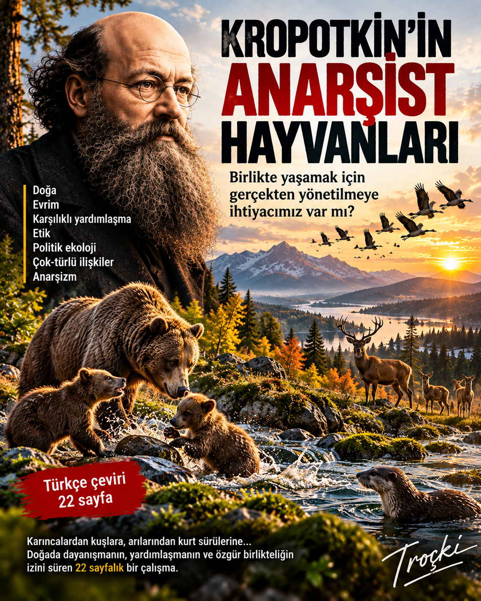

Pyotr Alekseyeviç Kropotkin (1842–1921), yalnızca anarşist düşüncenin en etkili isimlerinden biri değil; aynı zamanda coğrafyacı, doğa araştırmacısı ve doğadaki toplumsallığı siyasal düşünceyle birlikte okumaya çalışan özgün bir yazardır. Onun düşüncesinde doğa ile toplum birbirinden kopuk iki alan değildir: işbirliği, karşılıklı bağımlılık ve ortak yaşam her ikisini de anlamanın anahtarlarıdır.

Aristokrat bir aileden doğa araştırmacılığına
Kropotkin 1842’de Moskova’da, İmparatorluk sarayıyla güçlü bağları bulunan varlıklı ve aristokrat bir ailede doğdu. Çocukluk yıllarında tarih, edebiyat ve doğaya ilgi duydu; Kaluga çevresindeki ormanlarda yaptığı gezileri daha sonra doğaya duyduğu sevginin başlangıcı olarak anlattı. Page Corps’ta fizik, matematik, astronomi, tarih, hukuk, istatistik ve siyasal iktisat okudu; haritacılık ve arazi ölçümü deneyimi kazandı.
Sibirya: bilimin ve siyasetin dönüm noktası
İmparatorluk Muhafızlığı yerine Amur Kazaklarına katılması, Kropotkin’i Sibirya’nın geniş coğrafyasına taşıdı. Beş yıl boyunca bilimsel ve askerî seferlere katıldı; Baykal Gölü, Sayan Dağları, Patom Yaylaları, Amur Nehri ve Mançurya üzerinde çalıştı. Sahada özellikle aynı türden hayvanlar arasında sürekli çatışma beklerken, sert çevre koşullarına karşı ortaklaşa mücadele ve işbirliği örnekleriyle karşılaştı.
Aynı yıllarda devlet otoritesinin zayıf olduğu bölgelerde insanların ortak anlayış ve gönüllü işbirliğiyle karmaşık işler başarabilmesi de onu etkiledi. Bilimsel gözlem ile siyasal sorgulama burada birbirine yaklaşmaya başladı.
Karşılıklı yardımlaşma
Kropotkin’in en belirleyici düşüncelerinden biri, evrimi yalnızca rekabet üzerinden açıklamanın yetersiz olduğudur. Mutual Aid: A Factor of Evolution adlı çalışmasında karıncalardan kuşlara, memelilerden insan topluluklarına kadar çok sayıda örnek üzerinden toplumsallığın ve karşılıklı desteğin de güçlü bir evrimsel etken olduğunu savundu. Doğayı romantik biçimde yalnızca uyum ve barış olarak görmedi; çatışmanın varlığını kabul ederken işbirliğinin öneminin küçümsenmesine karşı çıktı.
Doğadan etiğe
Kropotkin’in hayvan toplumlarına ilgisi biyolojik bir meraktan ibaret değildi. Empati, bakım, oyun, ortak savunma ve grup yaşamında ahlakın insan-ötesi köklerini aradı. Ona göre ahlaki davranış yalnızca dinî buyrukların ya da devletin ceza düzeninin ürünü değildi; toplumsal yaşamın çok daha eski, evrimsel tarihinde kök salmıştı.
Kropotkin’in düşüncesinde “ben”den önce ve onun çevresinde her zaman bir “biz” vardır: yaşam, ilişkiler ve karşılıklı bağımlılıklar içinde kurulur.
Coğrafya, müşterekler ve özgür toplum
Kropotkin hayvan topluluklarında gördüğü merkezsiz işbirliğini insan tarihindeki köy toplulukları, loncalar, klanlar ve müştereklerle birlikte düşündü. Barınma, üretim, beslenme ve bakımın bütünüyle bireysel faaliyetler olmadığını; dünyaların ortak emek ve karşılıklılık ilişkileri içinde kurulduğunu vurguladı. Bu yaklaşım onu hiyerarşi ve zorunlu otoriteyi doğal ve kaçınılmaz sayan görüşlere karşı çıkmaya götürdü.
Başlıca eserleri
Kropotkin’in düşünsel mirasının temel metinleri arasında The Conquest of Bread, Mutual Aid: A Factor of Evolution, Fields, Factories and Workshops, Memoirs of a Revolutionist, Modern Science and Anarchism ve ölümünden sonra yayımlanan Ethics: Origin and Development bulunur. Coğrafya üzerine bilimsel makaleleri de onun doğa bilimleriyle siyasal düşünceyi aynı entelektüel evrende ele aldığını gösterir.
Patika’dan Kropotkin
Patika açısından Kropotkin’i ilginç kılan, özgürlüğü yalnızca siyasal bir slogan olarak değil, yaşamın örgütlenme biçimleri üzerinden düşünmesidir. Bir karınca kolonisinden köy müştereklerine, kuşların ortak savunmasından insanların dayanışma ağlarına kadar aynı sorunun peşindedir: Birlikte yaşamak için mutlaka yukarıdan yönetilmek gerekir mi?
Bu nedenle Kropotkin’in yazıları bugün ekoloji, etik, hayvan çalışmaları, müşterekler ve siyasal düşünce arasında hâlâ verimli bir geçiş alanı oluşturur. Onu yalnızca bir siyasal teorisyen olarak okumak, doğa araştırmacısını ve coğrafyacıyı eksik bırakır; yalnızca bilim insanı olarak okumak ise gözlemlerinden çıkardığı özgürlük fikrini görünmez kılar.
Patika Dergi · Edebiyat · Yazarlar